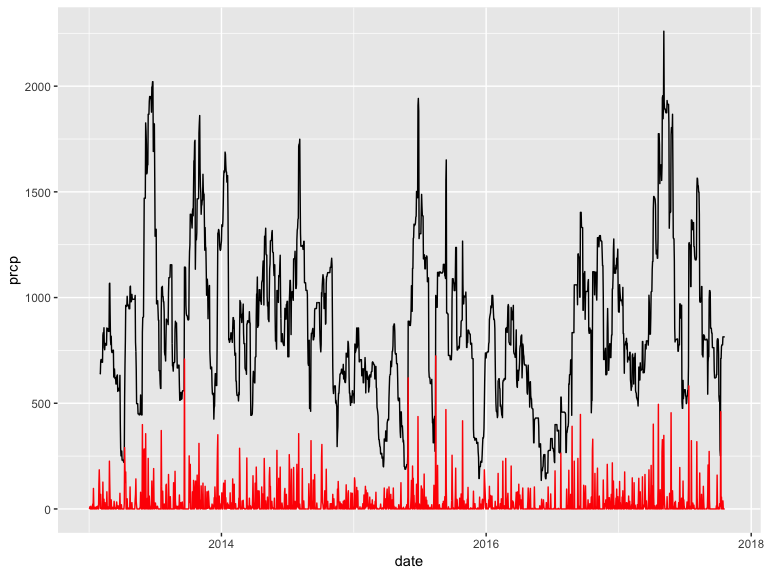
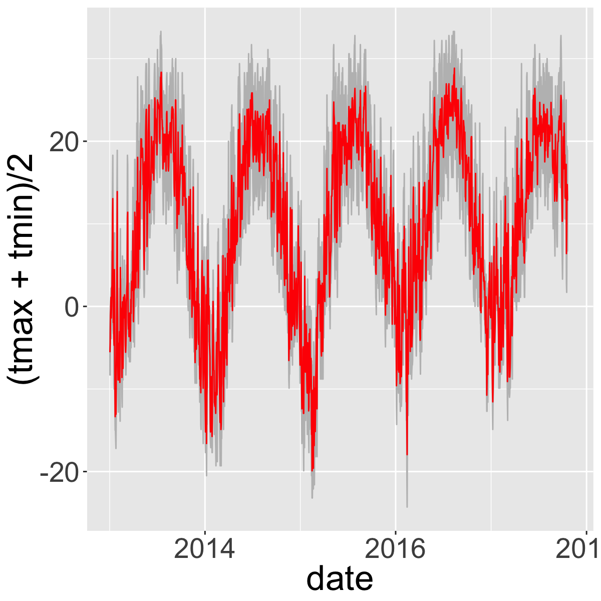
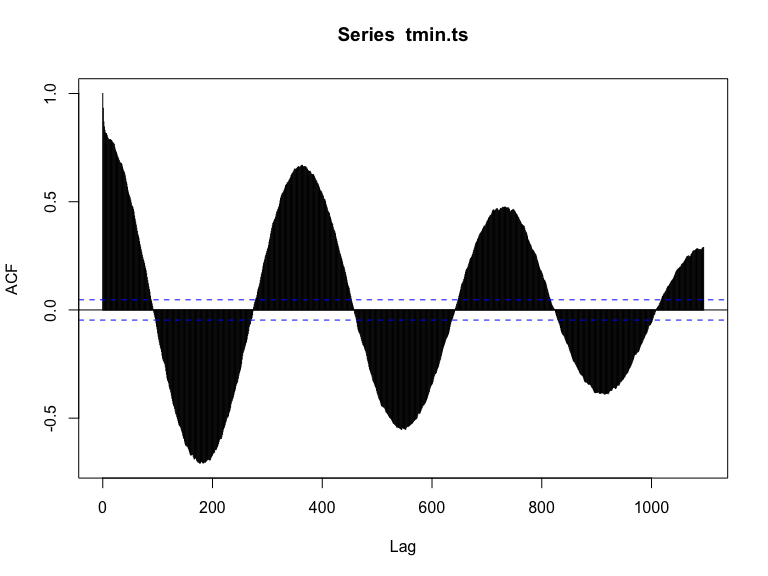
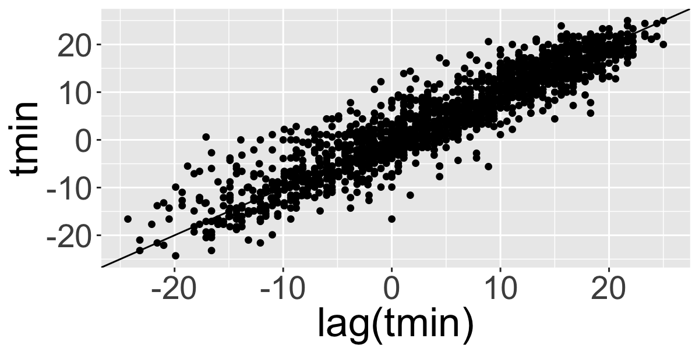
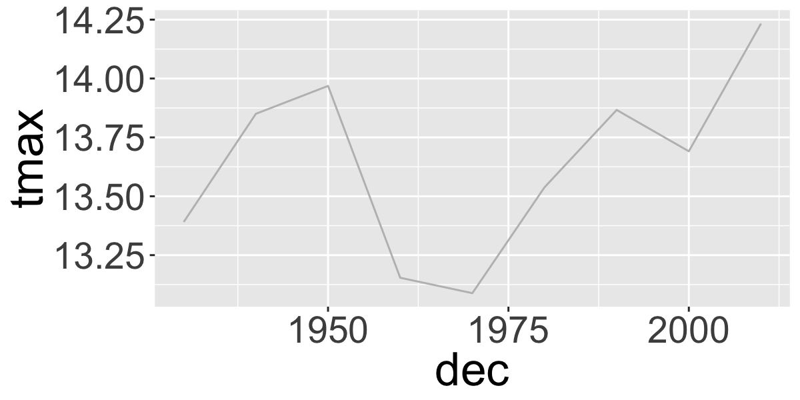
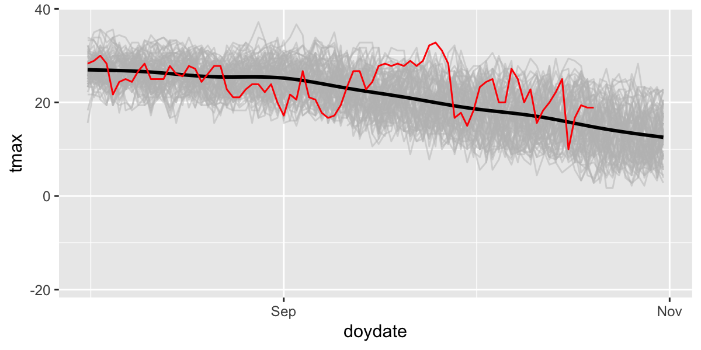
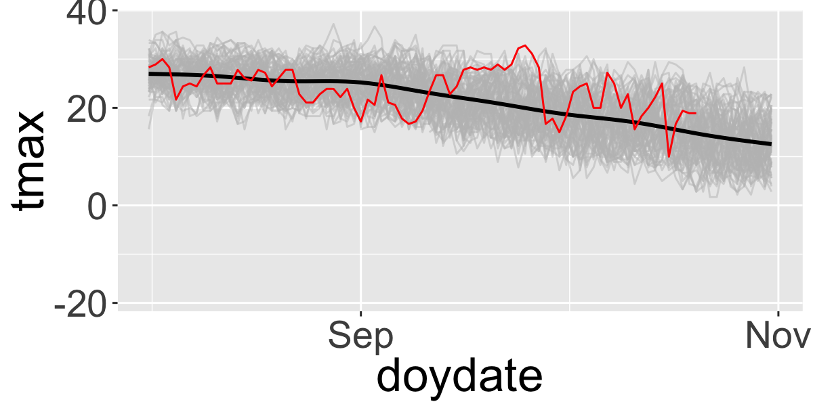
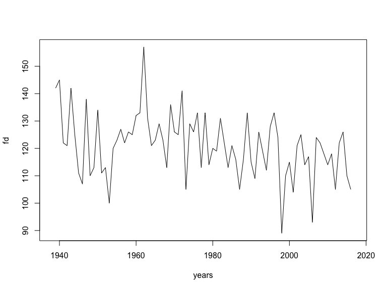

APIs, time-series, and weather Data
API
Application Programming Interface
- Imagine I wanted to work with Wikipedia content…
Manually processing information from the web
- Browse to page,
File->Save As, repeat. - Deal with ugly html stuff…
<!DOCTYPE html>
<html>
<head>
<meta charset="utf-8">
<meta name="generator" content="pandoc">
<title>APIs, time-series, and weather Data</title>
<meta name="apple-mobile-web-app-capable" content="yes">
<meta name="apple-mobile-web-app-status-bar-style" content="black-translucent">
<meta name="viewport" content="width=device-width, initial-scale=1.0, maximum-scale=1.0, user-scalable=no, minimal-ui">
<link rel="stylesheet" href="externals/reveal.js-3.3.0.1/css/reveal.css"/>APIs allow direct (and often custom) sharing of data
c1=content$parse$wikitext%>%
str_split(boundary("sentence"),simplify = T)%>%
str_replace_all("'","")%>%
str_replace_all("\\[|\\]","")
# results:
cat(c1[3:4])In Programming language|computer programming, an application programming interface (API) is a set of subroutine definitions, communication protocols, and tools for building software. In general terms, it is a set of clearly defined methods of communication among various components.
Many data providers now have APIs
- Government Demographic data (census, etc.)
- Government Environmental data
- Google, Twitter, etc.
Pros & Cons
Pros
- Get the data you want, when you want it
- Automatic updates - just re-run the request
Cons
- Dependent on real-time access
- APIs, permissions, etc. can change and break code
Generic API Access
- Provide R with a URL to request information
- The API sends you back a response
- JavaScript Object Notation (JSON)
- Extensible Markup Language (XML).
Endpoints
The URL you will request information from.
- Data.gov API: https://www.data.gov/developers/apis
- Github API: https://api.github.com
Some R Packages for specific APIs
FedData package
- National Elevation Dataset digital elevation models (1 and 1/3 arc-second; USGS)
- National Hydrography Dataset (USGS)
- Soil Survey Geographic (SSURGO) database
- International Tree Ring Data Bank.
- Global Historical Climatology Network (GHCN)
- Others
NOAA APIv2
National Climatic Data Center application programming interface (API).
rNOAA package
Handles downloading data directly from NOAA APIv2.
buoy_*NOAA Buoy data from the National Buoy Data Centerghcnd_*GHCND daily data from NOAAisd_*ISD/ISH data from NOAAhomr_*Historical Observing Metadata Repositoryncdc_*NOAA National Climatic Data Center (NCDC)seaiceSea icestorm_Storms (IBTrACS)swdiSevere Weather Data Inventory (SWDI)tornadoesFrom the NOAA Storm Prediction Center
Global Historical Climatology Network (GHCN)
GHCN
Libraries
Station locations
Download the GHCN station inventory with ghcnd_stations() and convert to sf object. The download can take a minute or two.
st = ghcnd_stations()%>%
na.omit()%>% # remove records with missing values
st_as_sf(coords=c("longitude","latitude"))%>% #convert to sf
st_set_crs("+proj=longlat +ellps=WGS84 +datum=WGS84 +no_defs")
head(st)%>%kable()| id | elevation | state | name | gsn_flag | wmo_id | element | first_year | last_year | geometry |
|---|---|---|---|---|---|---|---|---|---|
| ACW00011604 | 10.1 | ST JOHNS COOLIDGE FLD | TMAX | 1949 | 1949 | c(-61.7833, 17.1167) | |||
| ACW00011604 | 10.1 | ST JOHNS COOLIDGE FLD | TMIN | 1949 | 1949 | c(-61.7833, 17.1167) | |||
| ACW00011604 | 10.1 | ST JOHNS COOLIDGE FLD | PRCP | 1949 | 1949 | c(-61.7833, 17.1167) | |||
| ACW00011604 | 10.1 | ST JOHNS COOLIDGE FLD | SNOW | 1949 | 1949 | c(-61.7833, 17.1167) | |||
| ACW00011604 | 10.1 | ST JOHNS COOLIDGE FLD | SNWD | 1949 | 1949 | c(-61.7833, 17.1167) | |||
| ACW00011604 | 10.1 | ST JOHNS COOLIDGE FLD | PGTM | 1949 | 1949 | c(-61.7833, 17.1167) |
GHCND Variables: 5 core values
- PRCP Precipitation (tenths of mm)
- SNOW Snowfall (mm)
- SNWD Snow depth (mm)
- TMAX Maximum temperature
- TMIN Minimum temperature
And ~50 others! For example:
- ACMC Average cloudiness midnight to midnight from 30-second ceilometer
- AWND Average daily wind speed
- FMTM Time of fastest mile or fastest 1-minute wind
- MDSF Multiday snowfall total
filter() to temperature and precipitation
Map GHCND stations
First, get a global country polygon
Station locations
map1=ggplot() +
geom_sf(data=world,inherit.aes = F,size=.1,fill="grey",colour="black")+
facet_wrap(~element)+
stat_bin2d(data=st_filtered,
aes(y=st_coordinates(st_filtered)[,2],
x=st_coordinates(st_filtered)[,1]),bins=100)+
scale_fill_distiller(palette="YlOrRd",trans="log",direction=-1,
breaks = c(1,10,100,1000))+
coord_sf()+
labs(x="",y="")
Download daily data from GHCN
ghcnd() will download a .dly text file for a particular station. But how to choose?
geocode in ggmap package useful for geocoding place names
Geocodes a location (find latitude and longitude) using either (1) the Data Science Toolkit (http://www.datasciencetoolkit.org/about) or (2) Google Maps.
## lon lat
## 1 -78.80388 42.95973However, you have to be careful:
## lon lat
## 1 -120.5015 47.50012## lon lat
## 1 -77.03637 38.89511But this is pretty safe for well known and well-defined places.
## lon lat
## 1 -78.73153 42.97851Now use that location to spatially filter stations.
buffalo_b=st_buffer(buffalo, 0.05) #radius of buffer in decimal degrees
st1=st_within(st_filtered,buffalo_b)%>% #find stations in the buffered polygon
apply(1, any)
str(st1)## logi [1:175510] FALSE FALSE FALSE FALSE FALSE FALSE ...| id | elevation | state | name | gsn_flag | wmo_id | element | first_year | last_year | geometry |
|---|---|---|---|---|---|---|---|---|---|
| US1NYER0004 | 184.1 | NY | WILLIAMSVILLE 4.1 N | PRCP | 2009 | 2011 | c(-78.7432, 43.0216) | ||
| US1NYER0007 | 214.0 | NY | WILLIAMSVILLE 2.7 E | PRCP | 2008 | 2018 | c(-78.6879, 42.9693) | ||
| US1NYER0054 | 178.0 | NY | EAST AMHERST 1.2 WNW | PRCP | 2009 | 2018 | c(-78.719, 43.0225) | ||
| US1NYER0083 | 96.9 | NY | WILLIAMSVILLE 1 NW | PRCP | 2010 | 2014 | c(-78.7663, 42.9698) | ||
| US1NYER0102 | 214.3 | NY | CHEEKTOWAGA 2.7 NE | PRCP | 2013 | 2018 | c(-78.7193, 42.9412) | ||
| US1NYER0104 | 179.5 | NY | WILLIAMSVILLE 2.2 NNW | PRCP | 2013 | 2018 | c(-78.7526, 42.9942) | ||
| US1NYER0107 | 186.2 | NY | AMHERST 3.3 ENE | PRCP | 2014 | 2018 | c(-78.7269, 42.9855) | ||
| US1NYER0147 | 180.7 | NY | WILLIAMSVILLE 2.4 N | PRCP | 1998 | 2018 | c(-78.7403, 42.9974) | ||
| USW00014733 | 211.2 | NY | BUFFALO | HCN 72528 | TMAX | 1938 | 2018 | c(-78.7369, 42.9486) | |
| USW00014733 | 211.2 | NY | BUFFALO | HCN 72528 | TMIN | 1938 | 2018 | c(-78.7369, 42.9486) | |
| USW00014733 | 211.2 | NY | BUFFALO | HCN 72528 | PRCP | 1938 | 2018 | c(-78.7369, 42.9486) |
With the station ID, we can download daily data from NOAA.
d=meteo_pull_monitors(monitors=c("USW00014733"),
var = c("TMAX","TMIN","PRCP"),
keep_flags = T)
head(d)%>%kable()| id | date | mflag_prcp | mflag_tmax | mflag_tmin | prcp | qflag_prcp | qflag_tmax | qflag_tmin | sflag_prcp | sflag_tmax | sflag_tmin | tmax | tmin |
|---|---|---|---|---|---|---|---|---|---|---|---|---|---|
| USW00014733 | 1938-05-01 | T | 0 | 0 | 0 | 0 | 144 | 39 | |||||
| USW00014733 | 1938-05-02 | T | 0 | 0 | 0 | 0 | 211 | 83 | |||||
| USW00014733 | 1938-05-03 | 25 | 0 | 0 | 0 | 167 | 72 | ||||||
| USW00014733 | 1938-05-04 | 112 | 0 | 0 | 0 | 206 | 94 | ||||||
| USW00014733 | 1938-05-05 | T | 0 | 0 | 0 | 0 | 311 | 106 | |||||
| USW00014733 | 1938-05-06 | 64 | 0 | 0 | 0 | 194 | 78 |
See CDO Daily Description and raw GHCND metadata for more details.
Quality Control: MFLAG
Measurement Flag/Attribute
- Blank no measurement information applicable
- B precipitation total formed from two twelve-hour totals
- H represents highest or lowest hourly temperature (TMAX or TMIN) or average of hourly values (TAVG)
- K converted from knots
- …
See CDO Description
Quality Control: QFLAG
- Blank did not fail any quality assurance check
- D failed duplicate check
- G failed gap check
- I failed internal consistency check
- K failed streak/frequent-value check
- N failed naught check
- O failed climatological outlier check
- S failed spatial consistency check
- T failed temporal consistency check
- W temperature too warm for snow
- …
See CDO Description
Quality Control: SFLAG
Indicates the source of the data…
Summarize QC flags
Summarize the QC flags. How many of which type are there? Should we be more conservative?
##
## G I S
## 29026 2 7 4- G failed gap check
- I failed internal consistency check
- S failed spatial consistency check
Filter with QC data and change units
Plot temperatures

Limit to a few years and plot the daily range and average temperatures.
d_filtered_recent=filter(d_filtered,date>as.Date("2013-01-01"))
ggplot(d_filtered_recent,
aes(ymax=tmax,ymin=tmin,x=date))+
geom_ribbon(col="grey",fill="grey")+
geom_line(aes(y=(tmax+tmin)/2),col="red")## Warning: Removed 11 rows containing missing values (geom_path).
Zoo package for rolling functions
Infrastructure for Regular and Irregular Time Series (Z’s Ordered Observations)
rollmean(): Rolling meanrollsum(): Rolling sumrollapply(): Custom functions
Use rollmean to calculate a rolling 60-day average.
alignwhether the index of the result should be left- or right-aligned or centered
d_rollmean%>%
ggplot(aes(ymax=tmax,ymin=tmin,x=date))+
geom_ribbon(fill="grey")+
geom_line(aes(y=(tmin+tmax)/2),col=grey(0.4),size=.5)+
geom_line(aes(y=tmax.60),col="red")+
geom_line(aes(y=tmax.b60),col="darkred")
Time Series analysis
Temporal autocorrelation
Values are highly correlated!
## Warning: Removed 12 rows containing missing values (geom_point).
Autocorrelation functions
- autocorrelation \(x\) vs. \(x_{t-1}\) (lag=1)
- partial autocorrelation. \(x\) vs. \(x_{n}\) after controlling for correlations \(\in t-1:n\)
Autocorrelation

Partial Autocorrelation

Trend analysis
Group by month, season, year, and decade.
How to convert years into ‘decades’?
## [1] 1938## [1] 1940## [1] 193## [1] 1930Now we can make a ‘decade’ grouping variable.
Calculate seasonal and decadal mean temperatures.
d_filtered2=d_filtered%>%
mutate(month=as.numeric(format(date,"%m")),
year=as.numeric(format(date,"%Y")),
season=case_when(
month%in%c(12,1,2)~"Winter",
month%in%c(3,4,5)~"Spring",
month%in%c(6,7,8)~"Summer",
month%in%c(9,10,11)~"Fall"),
dec=(floor(as.numeric(format(date,"%Y"))/10)*10))
d_filtered2%>%dplyr::select(date,month,year,season,dec,tmax)%>%head()%>%kable()| date | month | year | season | dec | tmax |
|---|---|---|---|---|---|
| 1938-05-01 | 5 | 1938 | Spring | 1930 | 14.4 |
| 1938-05-02 | 5 | 1938 | Spring | 1930 | 21.1 |
| 1938-05-03 | 5 | 1938 | Spring | 1930 | 16.7 |
| 1938-05-04 | 5 | 1938 | Spring | 1930 | 20.6 |
| 1938-05-05 | 5 | 1938 | Spring | 1930 | 31.1 |
| 1938-05-06 | 5 | 1938 | Spring | 1930 | 19.4 |
Timeseries models
How to assess change? Simple differences?
d_filtered2%>%
mutate(period=ifelse(year<=1976-01-01,"early","late"))%>% #create two time periods before and after 1976
group_by(period)%>% # divide the data into the two groups
summarize(n=n(), # calculate the means between the two periods
tmin=mean(tmin,na.rm=T),
tmax=mean(tmax,na.rm=T),
prcp=mean(prcp,na.rm=T))%>%
kable()| period | n | tmin | tmax | prcp |
|---|---|---|---|---|
| early | 13394 | 4.199753 | 13.67348 | 25.09372 |
| late | 15645 | 4.764507 | 13.75706 | 28.44032 |
But be careful, there were lots of missing data in the beginning of the record

# which years don't have complete data?
d_filtered2%>%
group_by(year)%>%
summarize(n=n())%>%
filter(n<360)## # A tibble: 2 x 2
## year n
## <dbl> <int>
## 1 1938 245
## 2 2017 304Plot 10-year means (excluding years without complete data):
d_filtered2%>%
filter(year>1938, year<2017)%>%
group_by(dec)%>%
summarize(
n=n(),
tmin=mean(tmin,na.rm=T),
tmax=mean(tmax,na.rm=T),
prcp=mean(prcp,na.rm=T)
)%>%
ggplot(aes(x=dec,y=tmax))+
geom_line(col="grey")
Look for specific events: was 2017 unusually hot in Buffalo, NY?
Let’s compare 2017 with all the previous years in the dataset. First add ‘day of year’ to the data to facilitate showing all years on the same plot.
Then plot all years (in grey) and add 2017 in red.
ggplot(df,aes(x=doydate,y=tmax,group=year))+
geom_line(col="grey",alpha=.5)+ # plot each year in grey
stat_smooth(aes(group=1),col="black")+ # Add a smooth GAM to estimate the long-term mean
geom_line(data=filter(df,year>2016),col="red")+ # add 2017 in red
scale_x_date(labels = date_format("%b"),date_breaks = "2 months")## `geom_smooth()` using method = 'gam' and formula 'y ~ s(x, bs = "cs")'
Then ‘zoom’ into just the past few months and add 2017 in red.
ggplot(df,aes(x=doydate,y=tmax,group=year))+
geom_line(col="grey",alpha=.5)+
stat_smooth(aes(group=1),col="black")+
geom_line(data=filter(df,year>2016),col="red")+
scale_x_date(labels = date_format("%b"),date_breaks = "2 months",
lim=c(as.Date("2017-08-01"),as.Date("2017-10-31")))
So there was an unusually warm spell in late September.
Summarize by season
Seasonal Trends
ggplot(seasonal,aes(y=tmin,x=year))+
facet_wrap(~season,scales = "free_y")+
stat_smooth(method="lm", se=T)+
geom_line()
Fit a linear model to a single season
## [1] 0.2338852| term | estimate | std.error | statistic | p.value |
|---|---|---|---|---|
| (Intercept) | -23.5510090 | 8.0425217 | -2.928311 | 0.0044803 |
| year | 0.0197133 | 0.0040659 | 4.848415 | 0.0000063 |
Linear regression for each season
# fit a lm model for each group
models <-
d_filtered2%>%
group_by(season)%>%
nest() %>%
mutate(lm_tmin = purrr::map(data, ~lm(tmin ~ year, data = .)),
tmax_tidy = purrr::map(lm_tmin, broom::tidy))%>%
unnest(tmax_tidy, .drop = T)%>%
filter(term=="year")
models## # A tibble: 4 x 6
## season term estimate std.error statistic p.value
## <chr> <chr> <dbl> <dbl> <dbl> <dbl>
## 1 Spring year 0.0156 0.00348 4.48 7.56e- 6
## 2 Summer year 0.0205 0.00189 10.9 2.77e-27
## 3 Fall year 0.0160 0.00323 4.97 6.87e- 7
## 4 Winter year 0.0145 0.00316 4.59 4.60e- 6Autoregressive models
See Time Series Analysis Task View for summary of available packages/models.
- Moving average (MA) models
- autoregressive (AR) models
- autoregressive moving average (ARMA) models
- frequency analysis
- Many, many more…
Climate Metrics
Climate Metrics: ClimdEX
Indices representing extreme aspects of climate derived from daily data:

Climate Change Research Centre (CCRC) at University of New South Wales (UNSW) (climdex.org).
27 Core indices
For example:
- FD Number of frost days: Annual count of days when TN (daily minimum temperature) < 0C.
- SU Number of summer days: Annual count of days when TX (daily maximum temperature) > 25C.
- ID Number of icing days: Annual count of days when TX (daily maximum temperature) < 0C.
- TR Number of tropical nights: Annual count of days when TN (daily minimum temperature) > 20C.
- GSL Growing season length: Annual (1st Jan to 31st Dec in Northern Hemisphere (NH), 1st July to 30th June in Southern Hemisphere (SH)) count between first span of at least 6 days with daily mean temperature TG>5C and first span after July 1st (Jan 1st in SH) of 6 days with TG<5C.
- TXx Monthly maximum value of daily maximum temperature
- TN10p Percentage of days when TN < 10th percentile
- Rx5day Monthly maximum consecutive 5-day precipitation
- SDII Simple pricipitation intensity index
Climdex indices
Format data for climdex
Generate the climdex object
Cumulative dry days

Diurnal Temperature Range

Frost Days
